注意：多图。内容可能含有少量剧透。
第六季“权力的游戏”（下面用GOT代表），攒齐了一季再一口气刷完，真是个错误的决定。不温不火的十集，只留下囫囵吞枣的空虚, 印象深刻的情节不多。回想起来，“私生子之战”勉强算一个亮点。在我印象中，这大概是GOT主要战斗中第一次出现平原会战的场面吧。“私生子之战”最提神的一幕，是小剥皮的半圆枪盾阵。这个包围圈看起来非常新奇，我在以往出现过盾墙、枪阵的古装戏里（现在记得的有“角斗士”，“亚历山大大帝”，“斯巴达克斯”，“罗马”），从来没见过这种圆形包围圈剿杀的战法。GOT以中世纪到文艺复兴时期的欧洲为底版构筑的世界中，虽然有黑水河上的野火，但还没发展出枪炮，也没有魔法加持（有龙的不算~）。两军对阵，还是要遵循真实世界里冷兵器作战的规律和逻辑。那小剥皮的枪盾阵，符合这些规律和逻辑吗？下面分三方面详细吐槽一下。
布阵——不可能的金钟罩
知乎上一个高票答案详细点评了小剥皮的计谋和战术。其中与枪盾阵有关的是，小剥皮射死前锋骑兵和步兵垒出尸山，接着等洋葱骑士带领后方余部推上前线了，再派出枪盾阵围剿，同时让另一路人马封锁尸山，最终形成一个半圆的金钟罩。

我不完全赞同这个答案的说法。就这个总体战术来说，可吐槽的地方就很多了，有些槽点不限于这一场战斗。比如GOT里面行军打仗都好像不吃不喝不要钱一样，远征军后面从来不带辎重部队。另外，骑兵部队即使不用钱买，单从训练培养的时间和难度来讲，也比步兵要昂贵得多，绝对不可能随随便便就批量射死用来垒尸山。放在现代，有人会通过炸毁自家的坦克部队来做路障吗？在古代，要封锁路线，也就是一条带刺的壕沟能解决的问题。
但这些暂且放下。我想集中吐槽一下小剥皮这个看起来威风、实际上简直是排兵布阵负面教材的半圆枪盾阵。
冷兵器时代的步兵团，一直是军队的核心力量。两方步兵方阵对冲，考验的不是单兵的武艺，而是方阵的韧性，谁能把阵型保持到最后、维持攻防平衡、把对方的阵型冲散，谁就能获得最后的胜利。所以电影里古罗马军队遭遇强敌陷入混战时，小队长们都要大喊“formation!”而不是高举驳壳枪“同志们冲啊！” 冷兵器时代，面对兵阵，单兵冲锋就是送死。至于如何保持阵型、保持何种阵型，靠的是战前的演练和战场上从十人队队长、百夫长到总司令的指挥系统。
小剥皮帐下的步兵团，可说是一支极端训练有素的队伍。几千人的队伍，只有一个领头的。刚冲锋时看起来还和对方的野人部队别无二致，
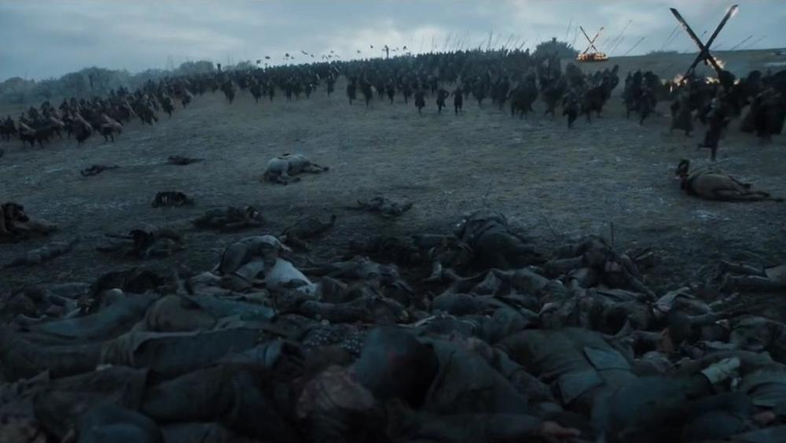
冲着冲着就变成了奥运开幕式的仪仗队，从尸山左右按秩序进场。
然后两股队伍能不受阻挠地合围成一个人数均匀的半圆形，真是神一般的走位。
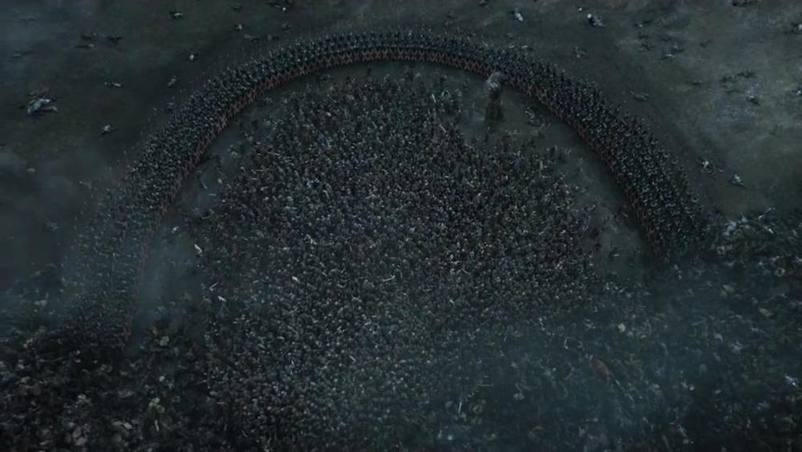
这些小节也暂且放下。就来说说这半圆形的阵型。首先，小剥皮会采用这样一个史无前例的阵型，一定是对于人数优势和战局优势有极其自信的预期。一般的平原会战，都是直线推直线。即便要包围敌军，也是由侧翼进行合围，由直线收拢成包围之势。比如汉尼拔打败罗马军的坎尼会战，汉尼拔先诱敌深入、再用的“钳形夹击”，把罗马军的战线给生生掰弯。（下图：红为罗马，蓝为汉尼拔。图片来自维基）
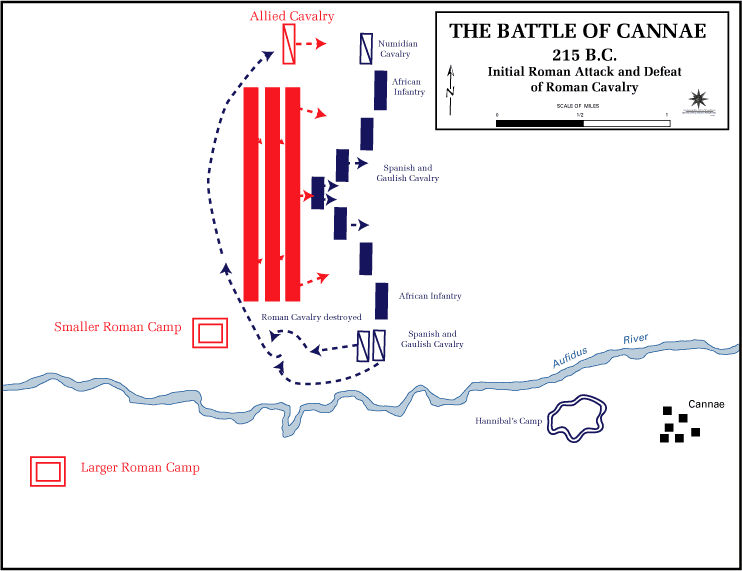
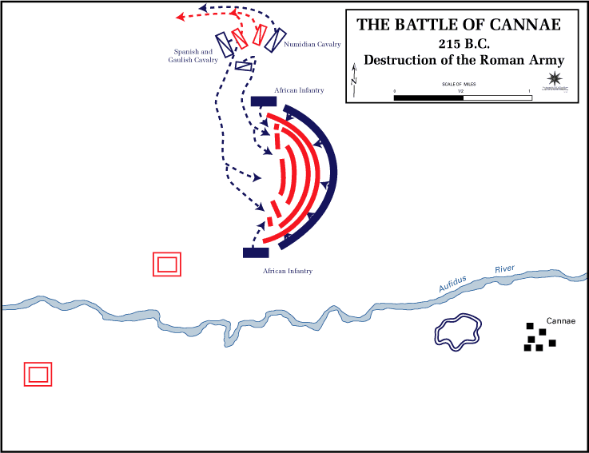
雪诺在作战会议上还向野人科普过这种战法：
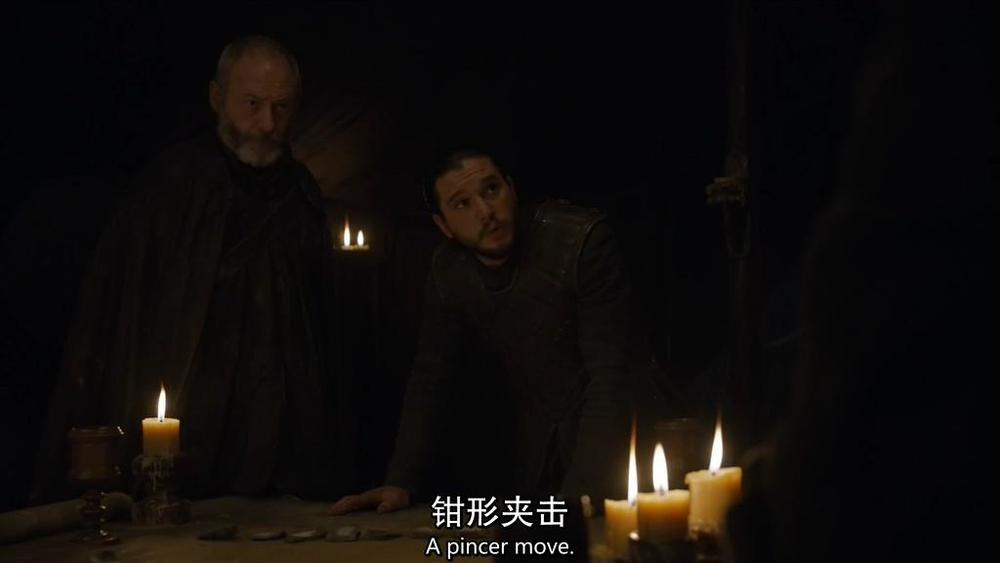
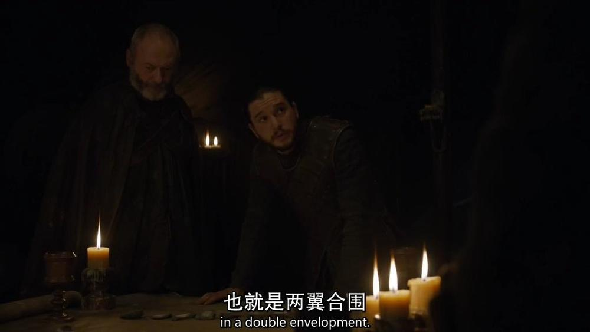
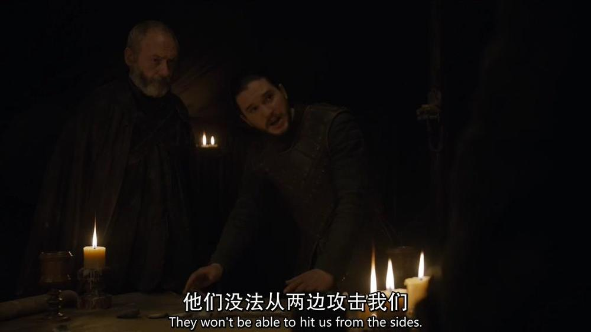
说得头头是道，没想到最后落入半圆包围圈的是自己的队伍…
但汉尼拔面对的是八万六千罗马部队，而小剥皮的半圆围住的看起来只有几百人而已。汉尼拔的半圆是沙盘上的大致形态，而小剥皮的小圈，就像是用圆规画出来的一样（当然，真的就是电脑画出来的啦）。我想，这个由紧挨在一起的巨盾组成的半圆会遇到的第一个麻烦，就是无法继续推进、挤压、缩小成一个半径更小的半圆。桥拱一样的半圆可是超稳定结构啊片子里的指挥官喊一次 ”Infantry, advance！“ 我就替前排的小兵捏把汗。左右都挤住了，怎么继续前进？汉尼拔的部队开始部署时都是进退自如的小方块，而且最后也不会合围成一个完美无缺的半圆形。
兵器——用错的长枪
说完阵型，再来看兵器和列阵。
枪盾阵用的是长枪（pike)。世上著名的长枪步兵方阵，古代有亚历山大大帝横扫欧亚大陆的马其顿步兵团，中世纪、文艺复兴时期有所向披靡的瑞士长枪步兵团。这些长枪都有五米上下。GOT里的长枪貌似比较接近这个长度。
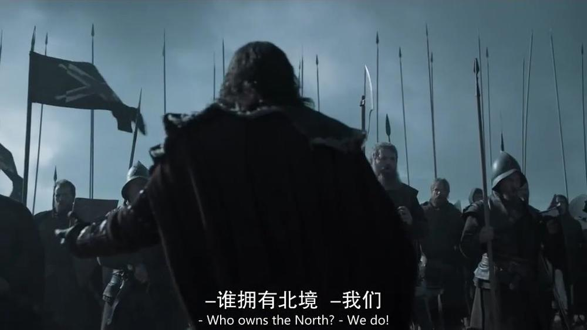
在GOT里，这些长枪和盾是怎么配合的呢？是这样前后两排：
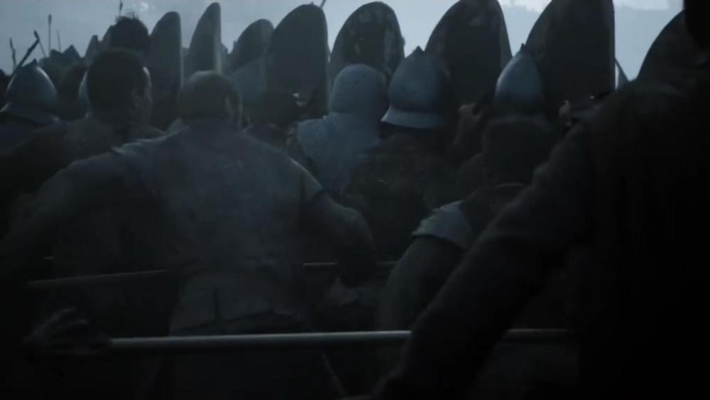
前排持双手巨盾，后排双手持长枪往前捅。
重点的吐槽就从这里开始了。
枪盾前后排分持。 这种安排是极其脆弱的。弩兵需要时间上弓，也许会需要专门的盾兵给他做防护，但贴身肉搏的近战兵只拿一只巨盾，是不合常理的。第一排的盾兵没有任何防守武器，两个手都占着，从任何角度刺一剑就马上扑街。这是小孩子都明白的道理：
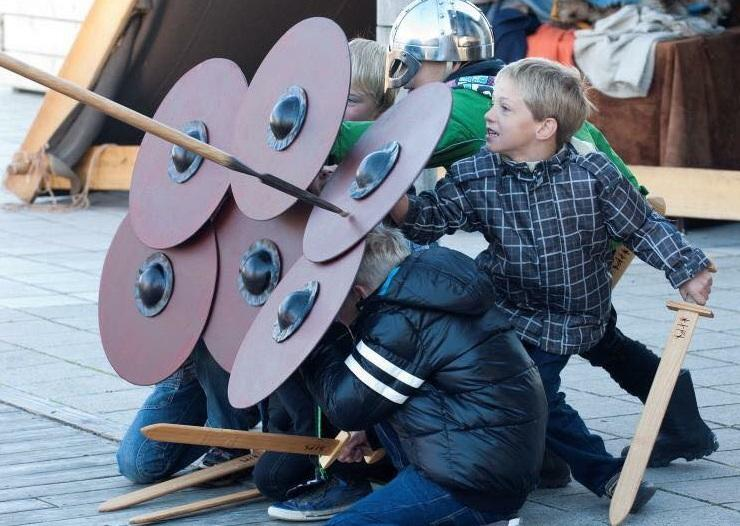
双手持的盾，本来就是个很怪异的设定，要攻防兼备，除非是这种略奇葩的造型：
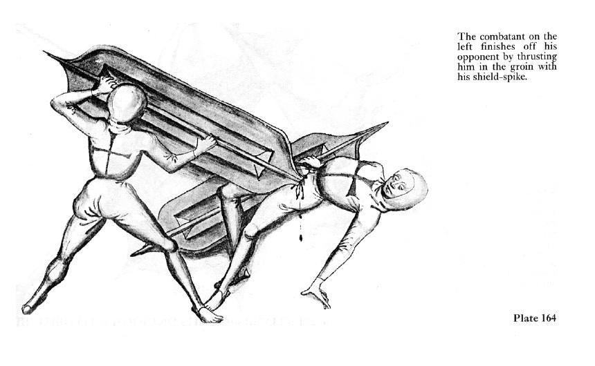
还有一种可能，GOT道具设计者的灵感可能来自于防暴警察：
后面的枪兵看起来也很辛苦，看不到前方，只能盲目地乱戳。乍看势不可挡，可是一旦前方一个盾兵被巨人拧了毛巾，他那根五米长枪面对近身的短剑斧头就毫无用处了，想举起来格挡一下都很困难，左右乱晃一下就会敲掉前方左右的盾兵，坏了自己的阵仗。所以前后枪盾这种组合，扑街的话一定是买一送一的。（更正：又看了下片子，发现盾兵背后还有持短剑的步兵。嗯，续一秒吧。）
聪明的同学要问了，那真实世界的长枪步兵是怎么活下来的呢？五米的长枪，肯定不能单手握持。马其顿人的做法是，小圆盾挂在左肩膀上。（下面两张图，注意握枪的手）
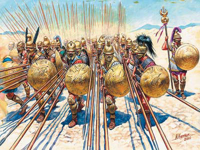
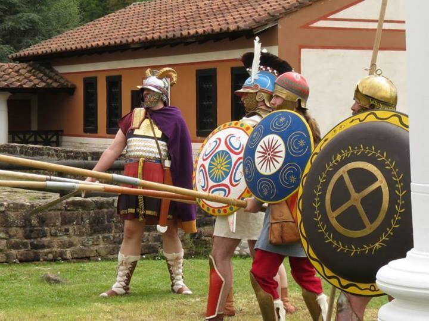
瑞士人更牛，不要盾。
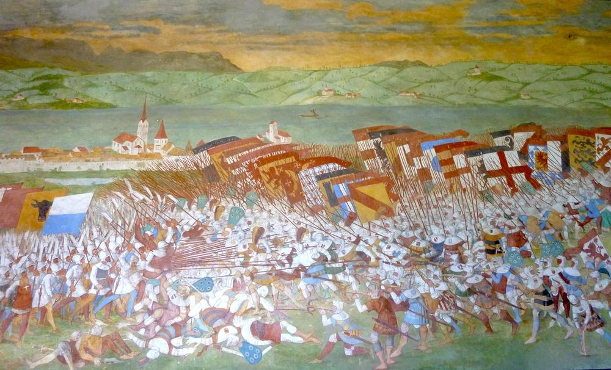
小圆盾，或者不要盾，比起小剥皮一人高的双手巨盾来，是不是很不可靠？但问题在于，真实世界里，五米长枪的用法根本就不是这样的！进入下一个槽点：
枪兵只上了一层。 一寸长，一分强。五米的长枪，那么难把持，枪兵还要从小就开始操练，并不只是为了能把敌人多隔远一米。枪做这么长的一大好处就在于，方阵前4-6排的枪兵可以同时发挥作用。第二到第五或第六排的兵把枪头指向前方，还能超出第一排枪兵的身位。所以尽管第一排暴露在直接危险中，但后四五排能在第一排肉盾背后一同组成一面好几层的枪头阵。
侧面看是这样的：
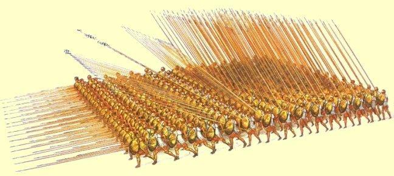
正面的敌人看起来大概是这样的：
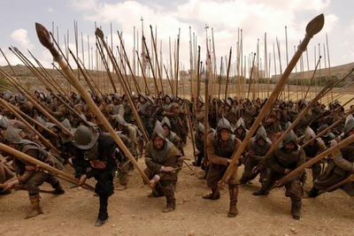
专治密恐的感觉。但小剥皮的枪阵，就只有可怜的一层：
这样当然需要巨盾来弥补一下。效率底下的原因，除了枪盾分成了前后两排之外，二排枪兵活动的范围还超级大，五米长枪，只有一半伸到盾牌外面去。这个步兵方阵里，枪兵这一层，恨不得就占了两米宽的道：
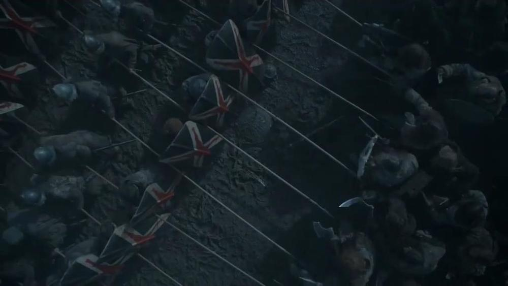
以这样的间距，站在第四层的枪兵若是横下枪头，只能戳中第一层盾兵的屁股，所以只好指天。（好在还有个巨人旺旺可以指一指）长枪的长度优势就被这种不专业的握持手法和排兵方式给抵消掉了。更令人遗憾的是，小剥皮的人数优势也同时被抵消掉了。从画面上看，包围圈一共有六层，也就是说除了进行有效攻击的第一层盾，第二层枪，背后还有两套盾加枪。按真实世界瑞士枪兵的标准，前六排应该都可以把枪头伸出去迎敌。但小剥皮的六排步兵团有一半持盾了，还有三分之二的枪兵在外围傻站着。
兵种——被浪费的长枪阵
然而这还不是最大的槽点。
最离奇的是，小剥皮对枪盾阵的使用，违反了兵种相克的规律。这个锅大概要甩给编剧。编剧或许不太了解长枪阵的历史兴衰。马其顿长枪阵确实辉煌过，但最终大败给罗马步兵的短剑。罗马步兵团的辉煌成就让长枪阵这种打法没落了一千多年，直到瑞士人再次将其发扬光大。而长枪之所以会再次受到亲睐，主要是因为重骑兵的崛起。盾加短剑无法阻止全副武装的重骑兵冲锋（关于重骑兵冲锋，玩过 Clash Royale 的同学可以想象一下骑士冲锋的攻击加倍）。而瑞士人对长枪阵的继承和改良，让重步兵终于有胜算来战胜重骑兵。（另外我猜，长枪重步兵应该也比重骑兵要便宜得多，便宜又能打胜仗，当然受欢迎）但瑞士步兵不是没有对手。身手敏捷的西班牙剑盾步兵就曾吊打和瑞士长枪步兵类似的德国步兵团。西班牙步兵之于德国步兵，正如罗马步兵之于马其顿步兵。或许可以这样大致判断兵种克制关系：
身手矫健的短兵近战剑盾步兵，是长枪步兵阵的天敌；而长枪步兵阵能有效压制重骑兵。
亚历山大或罗马的时代，骑兵的作用很弱，只有骚扰和追逃而已，并不能冲击步兵阵，是个人数稀少的辅助兵种。因为那时马镫还没被发明出来，骑马很难，骑马打仗更难。因此长枪对阵骑兵，大概没有什么知名的古代战例。瑞士长枪兵对付的中世纪重骑兵，是连人带马都武装到牙齿的：
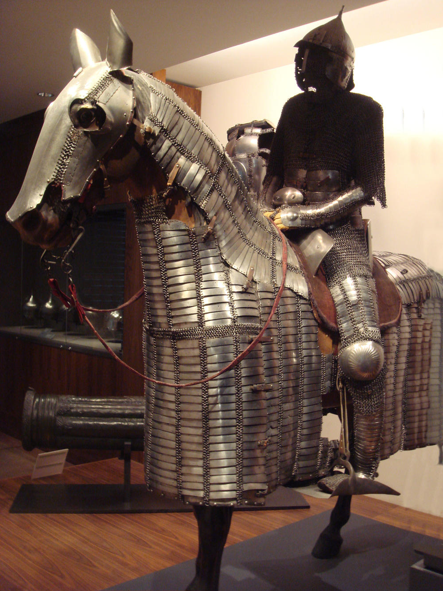
GOT里出现过重骑兵，比如第一季里有Mountain骑马比武的情景。但在”私生子之战”中最后到场的一票似乎是轻骑兵。也就是说，如果布阵及时适当的话，五米长枪阻挡这帮骑兵应该没什么问题；而包围圈内的野人部队更像是他们的天敌，即身手矫健的短兵步兵。可是在骑兵（和突然舒缓昂扬起来的背景音乐的）冲击下，小剥皮枪盾阵外围那几排刚刚一直长枪指天的酱油兵瞬间就被冲散了：
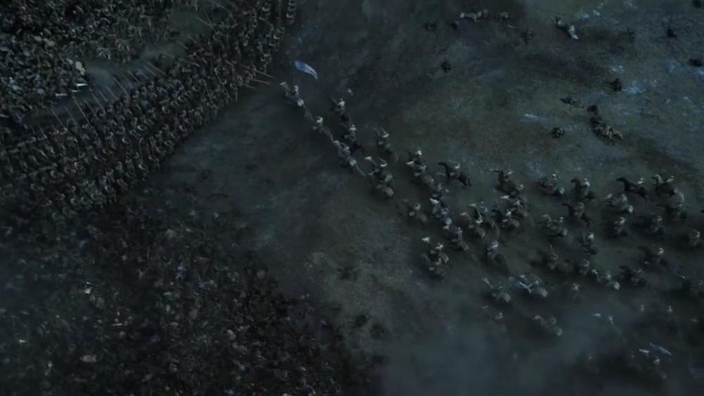
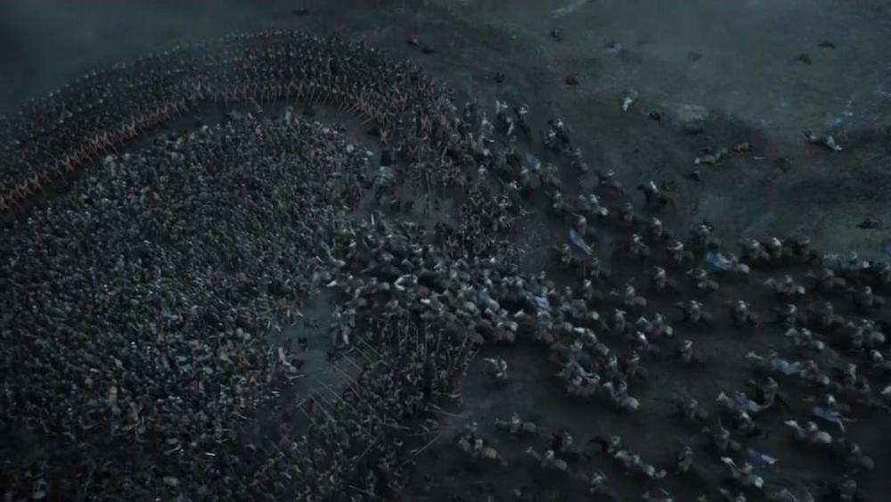
只有三支枪可怜地比划了一下，比划的方法也不对，应该有上挑的角度啊：
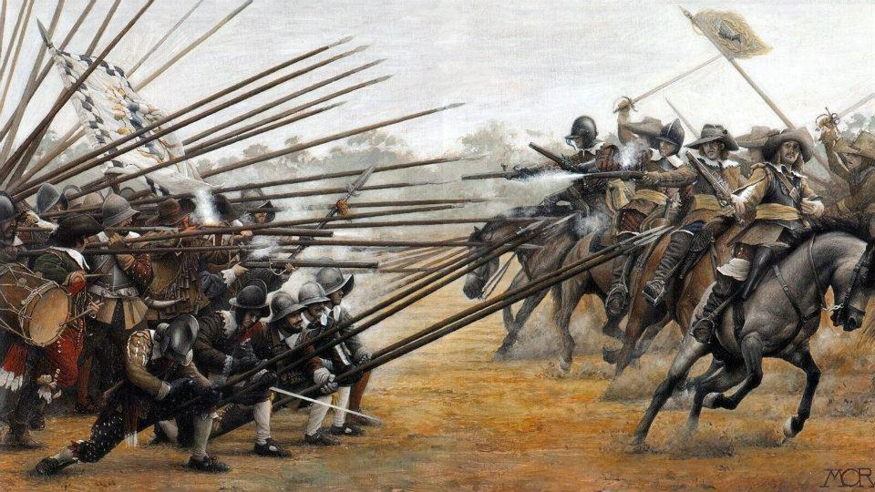
这就让人不禁纳闷了，难道这支原本应该最擅长对付骑兵奔袭、且能够八百标兵奔北坡、自动列队形成包围圈的优秀长枪步兵团，竟然没学过该怎么招架骑兵吗？话说回来，如果真有人数够多、纪律够好的长枪步兵团，根本就不应该射骑兵堆尸山再做盾枪包围圈啊，直接就用射手和枪兵干掉雪诺的马队、再用自己的马队干掉雪诺的步兵和射手，说不定还有时间重新布阵迎击迟到的骑兵。有人数优势兵种优势又没道德负担（友军可随便杀~），对手还是不懂阵法的野蛮人，输了真是可惜。Ramsay，你听说过田忌赛马吗？
总结
总结一下，小剥皮用枪盾阵，至少犯了这三个错误：
1. 半圆形的”钳形夹击“要成型几乎不可能，即便能成型也彻底丧失了灵活性；
2. 枪盾前后两人持，浪费人手、增加危险；排阵不科学，长枪用成了短枪，还空出三分之二的兵力在后排划水望天；
3. 不懂兵种相克。
不过话说回来，小剥皮还是比狼家的任何一个人都更具将才啊~
如果您喜欢此博客或发现它对您有用，则欢迎对此发表评论。 也欢迎您共享此博客，以便更多人可以参与。 如果博客中使用的图像侵犯了您的版权，请与作者联系以将其删除。 谢谢 ！